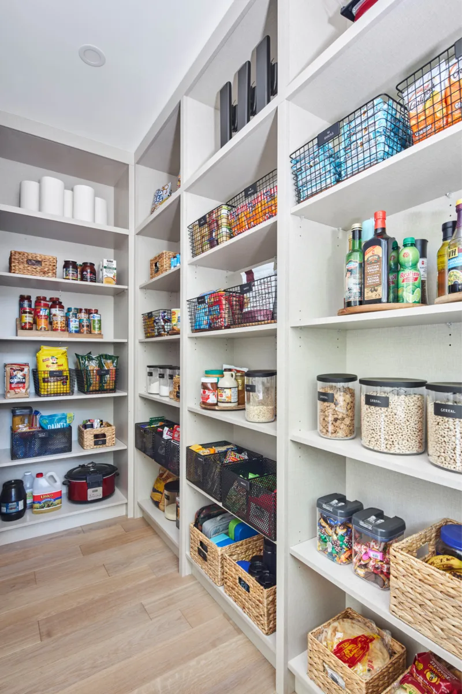
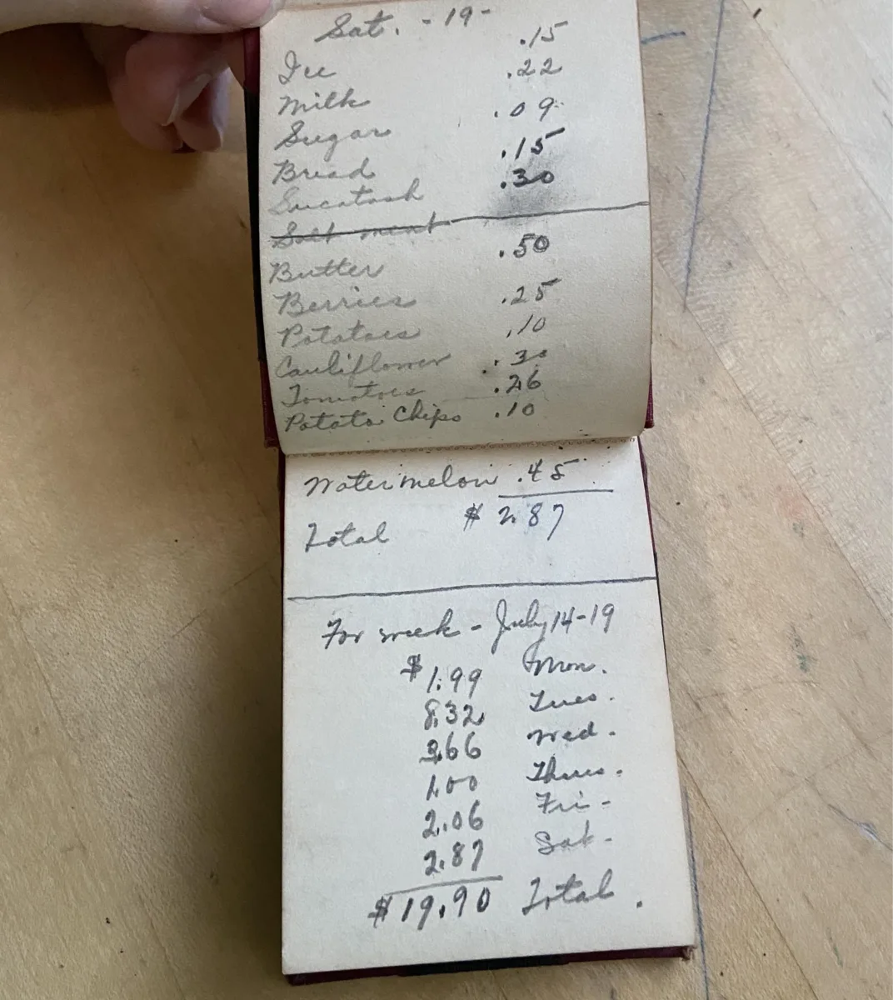
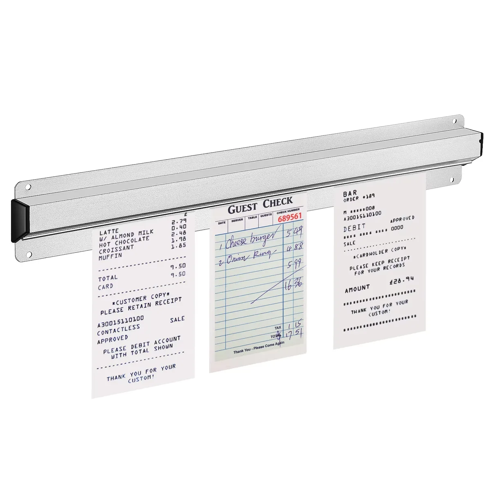
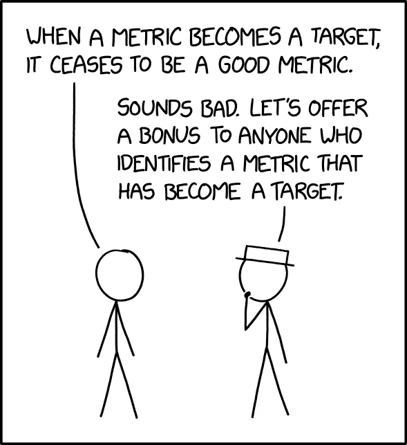
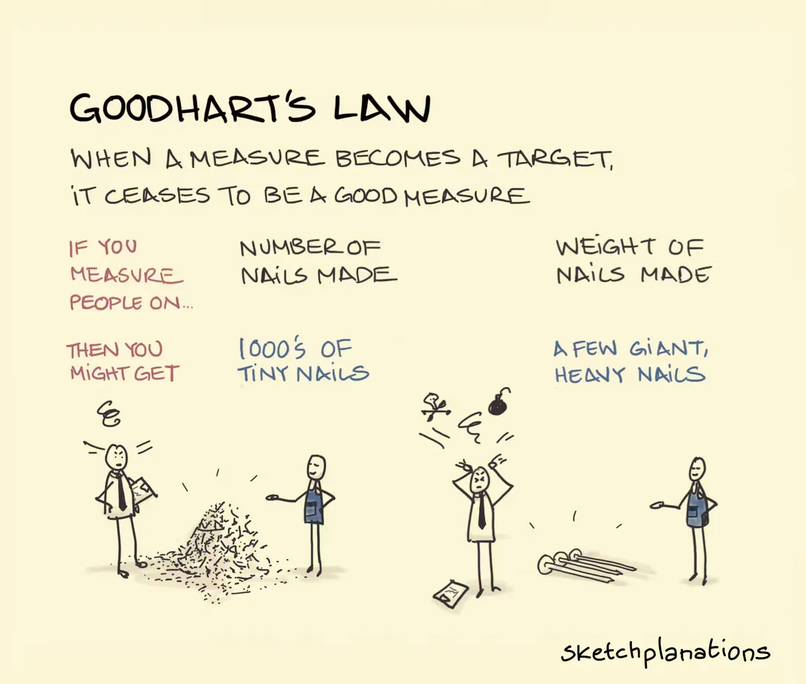
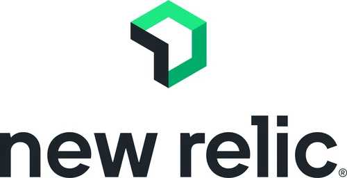

What is New Relic
Observability explained to your grandma
The Product
The Services


The Telemetry




What is New Relic
Observability company

What is New Relic
Observability company
Customers across all industries.
You get the idea…
The importance of Reliability
We are the customers’ eyes
If we have latency, our customers will learn late
If our data is not accurate, our customers will be misled
If we lose data, our customers can’t debug
If we go down, our customers go blind
Some Hungarian wisdom
Albert Szent-Györgyi
“Discovery consists of seeing what everybody has seen and thinking what nobody has thought”
The importance of Reliability
We track what matters
- Time-to-detect (TTD): how long from the moment something goes wrong to the moment we know about it.
- Time-to-mitigate (TTM): how long from detection until customer impact stops.
- Percent of customers impacted: the impact radius of any given incident. It tells us whether we are dealing with a widespread outage or an isolated failure.
- Change failure rate: how often changes to our systems result in an incident or customer impact.
A Learning Opportunity
But first… how pipelines work
A Learning Opportunity
A customer couldn’t fetch their data
Querying their telemetry
(give me all infrastructure data) GoodQuerying their telemetry with conditions
(give me infrastructure data where CPU is over 80%) NadaA Learning Opportunity
How did this happen?
- Code coverage was above 80% in that team
- Integration tests covered all contracts
- Runbooks, synthetic tests, bake times, canary deploys, all in place…
We were not testing the customer journey.
Focus your reliability work on the customer’s point of view.
A Learning Opportunity
The problem with reliability metrics


“When a measure becomes a target, it ceases to be a good measure”Charles Goodhart
What do we Measure
So, we shouldn’t use metrics?
Metrics should be a conversation starter, never the goal.
Metrics without context are useless.
Measure from the customer’s perspective.
What do we Measure
The importance of a Product Manager
They define features and roadmaps.
As an engineer you are accountable for keeping things running reliably.
The PM tells you what the customer cares about.
Service Level Agreements and Service Level Objectives

Test like a Customer
Agent2Query: reproducing the user’s data journey to New Relic

Test like a Customer
Why is that important? You care about the customer:
- If they see the data
- When they see it
- How they see it
- What they miss
We test from the very origin of the data, with nothing synthetic.
With Agent2Query we detected issues proactively, and we also found code correctness issues.
Baking Times
You don’t bake a cookie the same way you bake a stew.
Using the stew’s baking time:

Baking Times
You don’t bake a cookie the same way you bake a stew.
Using the cookies’ baking time:
The problem with Baking Times
They are not deterministic.
You are playing with the odds that a problem appears during the bake time.
Baking recipes: define a list of ingredients (checks)
- Wait for some specific traffic to happen (throughput, data topology, etc.)
- Force a dashboard validation
- Trigger downstream tests
- Force a set of validations
You define a different recipe for each service type. Not all services are built equal.
Involve your PM
Develop a testing plan
- Runbook coverage
- Contracts upstream and downstream
- Feature coverage
- Risk matrix
Is this exercise for resiliency only?
Embrace the Chaos
Chaos tests and gamedays
Make gamedays part of the development cycle.
Use your risk matrix, past incidents, and new development as drivers.
And inject chaos:
- Force a high CPU
- Drop a pod
- Inject latency
- Send a swarm of requests
It is not only about testing the resiliency of your systems. It is about understanding them.
Embrace the Chaos
Keep the humans in the loop.
AI is not accountable to your customers. You are.
Back to Szent-Györgyi
Browning is a normal reaction: oxidation.
He found the protective reducing agent: vitamin C.
Back to Szent-Györgyi
Do not only study anomalies. Study the normal behavior:
traffic, spikes, throughput, latency, saturation.
Then identify your reducing agents: circuit breakers, rate limiters, connection pools, etc.
Do not wait for the browning.
Back to Szent-Györgyi
Back then, scientists were divided on how cells get energy: activate the oxygen, or activate the hydrogen.
Szent-Györgyi helped connect them with a chain of carriers.
Our chain is the customer journey. Observe it, and build your tests on what the customer cares about.
Closing Words
New Relic has been applying most of these practices for years.
But that incident made us look for new ways to approach reliability.
This last year:
And we did not slow down our deploys.